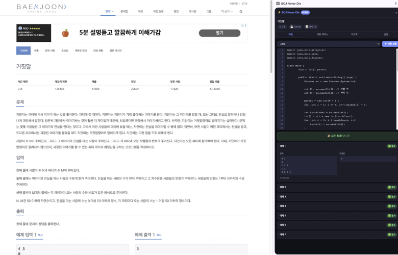
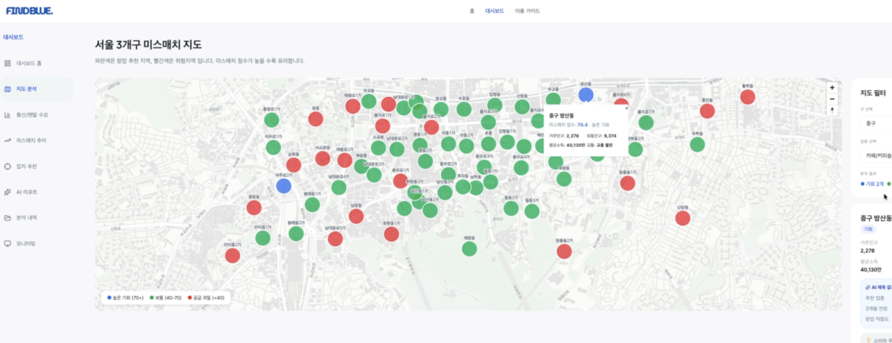
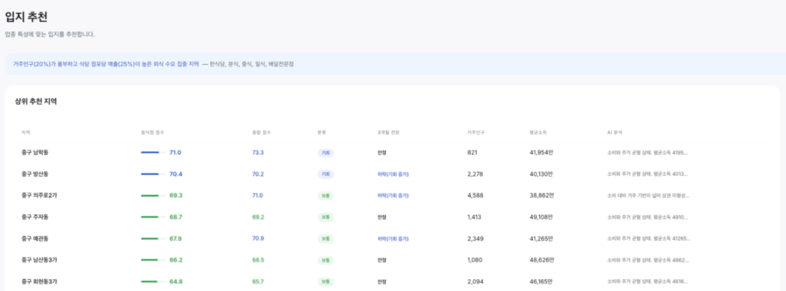
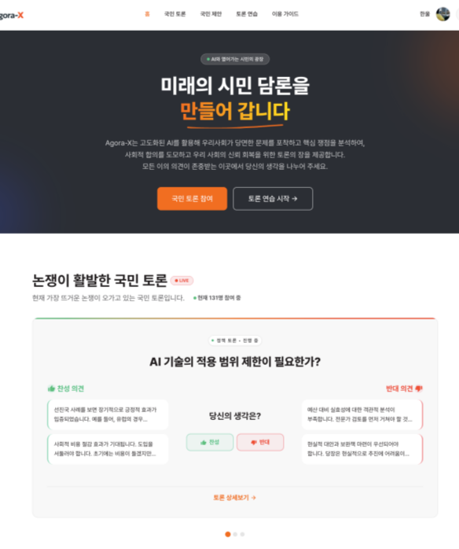
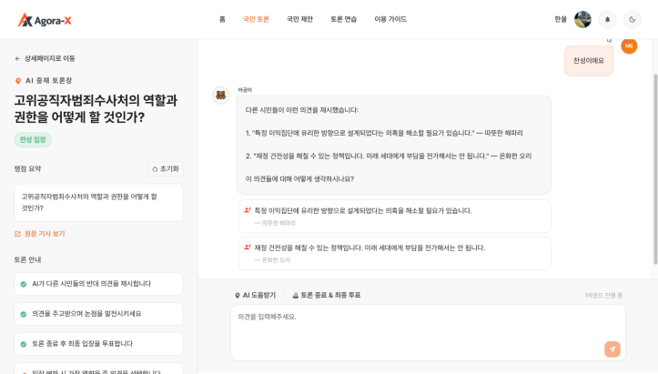

문제를 정의하고 해결하는 개발자, 김한울
포트폴리오
목차
INDEX
학력사항
교육
경력사항
자격사항
안녕하세요! 2년차 개발자 김한울입니다.
코드로 답을 찾는 사람
전공수업에서 우연히 R을 다뤘을 때, 프로그래밍이 가진 명확함에 매료됐습니다. 모호한 해석이 공존하는 인문·사회과학과 달리, 코드는 올바른 로직이 있으면 반드시 원하는 결과를
만들어냈습니다.
제 손으로 직접 변화를 만들어낼 수 있다는 점이 적성과 맞닿아 있다고 느껴, 개발자의 길로 들어섰습니다. 지금도 명확함을
찾아가고
의미있는 변화를 만들어가는 과정에 보람을 느끼고 있습니다.
끝까지 책임지는 개발
QA 전날이면 동료들의 시간이 낭비되지 않도록, 제 선에서 방지할 수 있는 버그는 야근을 마다하지 않고 최대한 수정해두도록 하였습니다. 제가 할 수 있는 최선을 고민하고, 완료된 기능이라도 더 나은 방법이 보이면 다시 들여다봅니다. 새로운 기술을 꾸준히 학습하는 것도 책임의 일부라고 생각하며, 서비스 품질을 높이는 데 사용할 수 있는 역량을 갖춰두려고 합니다. 회사 제품에 주인의식을 갖는 것이 곧 개발자로서의 성장과 연결된다고 믿습니다.
`프론트엔드에서 시작해 풀스택으로 확장
프론트엔드 개발자로 커리어를 시작해 점차 백엔드와 DB 설계까지 역량을 확장해왔습니다. 2년간 실무를 거치며 사용자 경험을 중심에 두고 서비스를 어떻게 더 잘 만들 수 있을지 끊임없이 고민해왔으며, 그 고민이 기술 스택의 경계를 자연스럽게 넓혀주었습니다.
맥락을 읽는 협업
질문 하나를 하더라도 동료의 시간을 아낄 수 있도록 먼저 정리해서 묻고, 사소한 것이라도 공유가 필요하다면 먼저 말을 꺼내는 편입니다. 대화 상대가 개발자이든 기획자·디자이너이든, 상대방이 익숙한 언어로 이야기할 수 있도록 합니다. 부서가 달라도 결국 같은 목표를 향해 일하는 동료라는 인식 아래, 서로의 영역을 이해하고 존중하는 협업을 중요하게 여깁니다.
보유 기술 스택
Frontend
Backend / Database
협업 툴
Easy HACCP WEB/Mobile (1)
서비스 개요
식품 제조전 과정에서 HACCP 관련 업무를 자동화하는 MES(Manufacturing Execution System) 솔루션.
기획부터 관계형 DB 설계, 풀스택 개발까지 담당.
제공 기능
- 제조실 온도 데이터 실시간 모니터링 및 기록
- 제조 과정 및 점검 내용을 텍스트나 이미지 등으로 기록
- 모바일 앱을 통해 오프라인 환경에서 작업 가능
- 온도나 모니터링 기록에 문제가 발견되면 알림 발송
배운 점 및 성과
1. 오프라인 환경 대응 – 로컬 저장 후 자동 동기화
사용 현장이 네트워크가 불안정한 환경일 수 있다는 점을 고려해, Hive(로컬 NoSQL DB)를 도입하여 오프라인 상태에서도 데이터를 수정·저장할 수 있도록 처리했습니다. 이후 네트워크가 재연결되면 로컬에 쌓인 변경 데이터를 서버로 자동 전송하는 동기화 로직을 구현하여, 연결 상태와 무관하게 업무 흐름이 끊기지 않도록 했습니다.
2. 연속 API 요청 최적화 – 디바운스 적용
조회 날짜를 빠르게 이동하는 등 단시간 내 동일한 API 요청이 과다 발생하는 상황에서, 디바운스(debounce)를 적용해 마지막 입력 이후 일정 시간이 경과한 요청만 서버로 전달하도록 처리했습니다. 불필요한 네트워크 트래픽을 줄이고 서버 부하를 낮추는 동시에, 사용자 입장에서도 응답이 더 명확하게 반환되는 효과를 얻었습니다.
Easy HACCP WEB/Mobile (2)
3. 미디어 업로드 처리 서버 위임 – 클라이언트 API 호출 단순화
기존에는 클라이언트에서 미디어 파일 저장 API를 먼저 호출해 반환된 파일 URL을 받은 뒤, 해당 값을 포함해 원본 데이터 저장 API를 다시 호출하는 2단계 구조였습니다. 이를 클라이언트는 데이터 저장 API 하나만 호출하고, 서버 내부에서 미디어 파일 저장 유틸 함수를 실행해 URL을 처리한 뒤 데이터를 저장하는 구조로 리팩토링했습니다. 이를 통해 클라이언트의 API 호출 복잡도와 순서 의존성을 제거하고, 미디어 처리 로직을 서버에서 일관되게 관리할 수 있게 되었습니다.
4. 실시간 데이터 반영 – SSE 기반 앱·웹 동기화
앱에서 온도 측정이 발생하면 웹 화면에도 즉시 반영되어야 하는 요구사항을 SSE(Server-Sent Events)로 해결했습니다. 폴링 방식 대비 서버 부하를 줄이면서도 단방향 스트림으로 변경 이벤트를 클라이언트에 푸시하여, 사용자가 페이지를 새로고침하지 않아도 최신 데이터를 볼 수 있도록 실시간성을 보장했습니다.
5. 공용 컴포넌트 추출 – 중복 UI 로직 일원화
캘린더 등 프로젝트 내 여러 화면에 유사한 형태로 중복 구현되어 있던 UI 요소들을 공용 컴포넌트로 관리하도록 리팩토링하였습니다.
6. 온도 데이터 조회 속도 개선 – SQL 집계 함수로 전환
대량의 온도 데이터 조회 시 애플리케이션 레이어에서 수행하던 필터링·집계 전처리 로직을 SQL 쿼리 내 집계 함수(GROUP BY / 집계 함수)로 이전했습니다. 불필요한 데이터를 DB에서 전량 조회한 후 서버에서 가공하던 방식을 DB 단에서 필요한 결과만 산출하도록 개선하여, 조회 응답 시간을 3초대 → 1초대로 단축했습니다.
7. 다중 행 조회 병렬화 – Promise.all 적용
여러 행을 한 번에 조회할 때 순차적으로 API를 호출하던 구조를 Promise.all 패턴으로 전환하여 병렬 처리했습니다. 직렬 호출 시 각 요청의 응답 시간이 누적되어 전체 대기 시간이 늘어나던 문제를 해결하고, 동시 요청을 통해 실질적인 응답 시간을 단축했습니다. 결과적으로 가장 느린 단일 요청 시간이 전체 시간의 상한이 되는 구조로 개선되었습니다.
자사 커뮤니티/몰 통합 플랫폼 구축
서비스 개요
커뮤니티와 굿즈 몰이 결합된 자사 일러스트 플랫폼 구축 프로젝트.
제공 기능
- 일러스트 관련 이벤트나 굿즈에 대해 소통할 수 있는 커뮤니티 기능
- 관심 작가를 등록하고 굿즈가 발매되면 알림 발송
- 일러스트 굿즈 구입 및 교환, 환불 등의 절차 제공
배운 점 및 성과
1. SEO·웹 표준·웹 접근성 고려
자사 커뮤니티·몰 플랫폼의 검색 노출을 위해 Next.js를 채택하고, 시맨틱 태그 사용과 메타데이터·sitemap 설정을 통해 SEO 기반을 갖췄습니다. 예를 들어, 링크 이동이 발생하는 모든 요소에 반드시 Link(a) 태그를 사용하는 규칙을 적용해 웹 표준을 준수했습니다.
2. 서버·클라이언트 컴포넌트 분리 및 Hydration 에러 해결
SEO 이점을 유지하기 위해 서버 컴포넌트와 클라이언트 컴포넌트의 경계를 명확히 구분하고, 불필요한 클라이언트 번들 증가를 방지했습니다. Hydration 에러 발생 시에는 useServerInsertedHTML을 활용해 서버에서 생성된 값을 window 전역 객체에 주입하고 클라이언트 컴포넌트에서 참조하는 방식으로 해결했습니다.
3. 디자인팀과의 협업을 통한 디자인 컨벤션 수립
디자인 컨벤션 확립을 주도적으로 제안하여, 디자인팀과 긴밀히 협업하며 컴포넌트 단위의 디자인 컨벤션을 수립했습니다. 또한 상호 간 원활한 의사소통을 위해 용어를 통일했습니다. 컨벤션을 사전에 정의함으로써 구현 과정에서의 해석 차이를 줄이고, 이후 프로젝트에서도 일관된 UI 품질을 유지할 수 있었습니다.
배리어프리 여행 플래너, 이음
서비스 개요
"여행의 즐거움, 모두가 누릴 수 있도록"
장애인·노약자·유아 동반 가족을 위한 배리어프리 여행 플래너 서비스.
제공 기능
- 한국관광공사 Open API를 이용해 무장애 여행 정보 제공
- 사용자의 장애 요소에 대한 정보를 수집하여 맞춤형 정보 제공
- 음성 입력 기반 검색
- 여행 일정 관리 및 음성 입력 지원
- 접근성을 고려한 UI/UX, 글자 크기를 사용자가 자유롭게 조절
배운 점 및 성과
1. 인증 토큰 관리 및 동시 갱신 처리
액세스 토큰을 JS 메모리에서만 관리하여 브라우저 스토리지에 저장할 때에 비해 보안을 강화했습니다. 다만 이렇게 처리하면 새로고침 시 토큰이 소멸되는 문제가 존재하는데, 인터셉터에서 401에러 감지 시 리프레시 토큰 갱신을 하도록 하여 대응했습니다. 또한 동시 다발적으로 401에러가 발생하면 리프레시 토큰이 중복 요청되는 경우가 생겼습니다. 플래그 변수와 큐를 활용해 첫 번째 요청만 실행하고 나머지는 대기 후 일괄 재시도하는 방식으로 해결했습니다.
2. 음성 입력 기반 요청 자동 구성 – STT + Prompt Chaining
Web Speech API로 변환한 텍스트와 type 파라미터를 서버로 전달하면, 백엔드에서 LLM API에 Prompt Chaining을 적용해 해당 요청에 맞는 API 요청 body를 자동으로 구성하도록 처리했습니다. 사용자가 음성으로 입력한 자연어를 구조화된 데이터로 변환하는 흐름을 서버 단에서 일관되게 처리했습니다.
3. 기획 단계부터 개발 체계 구축
기획 문서 작성으로 시작으로 워크플로우 설계, ERD 기반 관계형 데이터베이스 설계, 와이어프레임 제작까지 직접 수행했으며, Github Project를 활용해 이슈 단위로 작업을 관리하며 프로젝트 전반의 개발 체계를 구축했습니다.
백준 채점용 크롬 익스텐션, BOJ Never Die
서비스 개요
백준 온라인 저지(BOJ) 사이트의 서비스 중단에 대비하여 제작한 Chrome 익스텐션.
서비스 중단 후에도 문제는 조회가 가능하다는 전제 아래, 사이드 패널로 익스텐션을 열고
본인의 코드를 바로 채점할 수 있도록 함.
제공 기능
- 10개 언어 지원
- 백준의 예제 케이스뿐만 아니라 AI나 커뮤니티에서 공유된 히든 테스트 케이스도 함께 채점 가능
- Github 자동 푸시
배운 점 및 성과
클라이언트의 DB 직접 접근을 제거하기 위해 Edge Function을 API Gateway로 활용한 서버리스 보안 아키텍처를 설계
데이터의 민감도와 사용 기간에 따라 저장 방식을 분리하여 보안성과 편의성 확보

자영업자를 위한 상권분석 서비스, Find Blue
서비스 개요
수요(카드 내역 데이터)와 공급(유사 업종 업장 개수) 간의 격차, 상권 특성(부동산, 유동인구, 대중교통 접근성) 등을 반영하여 데이터 기반의 정규화된 점수를 산출하고, 이를 바탕으로 사용자의 희망 업종을 고려해 최적의 입지를 분석해주는 서비스.
제공 기능
- 희망 업종 별 최적 입지 추천 및 시각화
- AI 기반 3개월 간의 상권 변화 예측
- 사용자 맞춤형 AI 분석 리포트 제공
배운 점 및 성과
Snowflake SDK와 같은 서버 전용 라이브러리를 API 계층으로 분리하여 Next.js 빌드 오류 해결
Snowflake 인증 정보가 없는 경우에도 Mock 데이터로 대체하여 개발할 수 있도록 설계


AI 기반 토론 커뮤니티, Agora-X
서비스 개요
AI 기반의 시민 토론 플랫폼으로, 사용자들이 쟁점별로 자신의 의견을 형성해나가고 반대 입장의 의견과 성숙하게 토론할 수 있도록 돕는 서비스.
제공 기능
- AI가 뉴스기사를 바탕으로 쟁점을 도출하고 사용자의 쟁점별 지식 수준 세팅값을 참고하여 쟁점에 대한 설명과 찬반 논거 제시
- AI에게 사회자의 역할을 부여하여 사용자의 입장과 반대 의견을 제시해주고, 사용자는 이에 대해 답변하여 성숙한 토론을 진행할 수 있도록 유도
- 토론 주제별로 익명 ID를 부여하여 특정인의 의견에 무게가 실리는 것을 방지
배운 점 및 성과
백엔드 서버 없이 Frontend 단일 아키텍처로 구현하며 AI가 생성하는 데이터 등 민감 정보는 없지만 호출 비용이 큰 데이터를 IndexedDB에 TTL 7일로 저장해두어 AI 호출 비용 최소화


읽어주셔서
감사합니다 :)
THANK YOU FOR CHECKING OUT
MY PORTFOLIO.
DEVELOPER, KIM HANUL